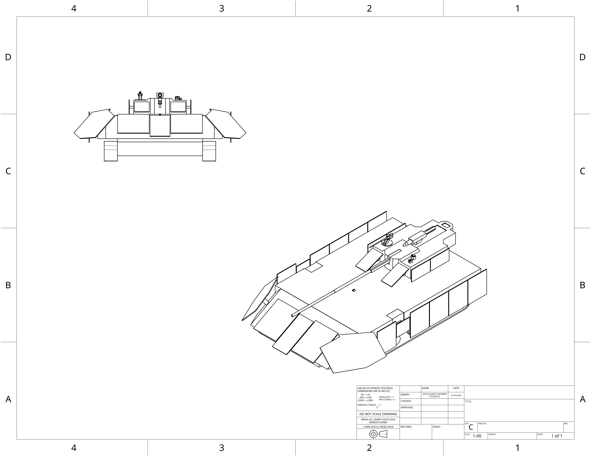

ECC main battle tank, utilizes hyper velocity capable 150mm missiles as its main armerment, paired with 76mm electrochemicalthermal autocannon and roof mounted .50 caliber machine gun. The spaced armor skirt surrounding the vehicle primarily act as whipple shields to counter the various high velocity weapons employed by the UCSC.
